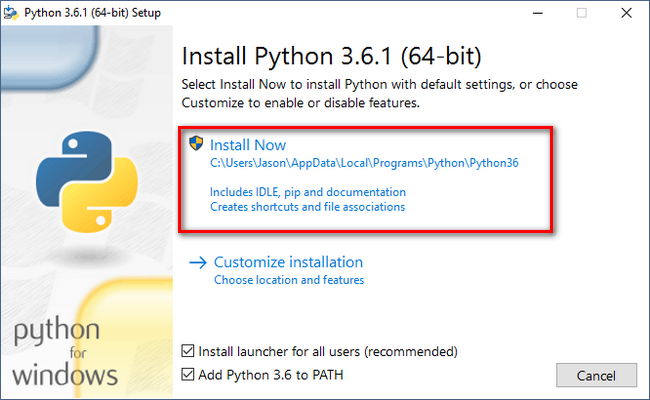

Ahmad Rosid
https://ahmadrosid.com The more I learn, the more I realize how much I don’t know.
May 28, 2018
https://ahmadrosid.com The more I learn, the more I realize how much I don’t know.
May 28, 2018
Flask dibuat diatas bahasa pemrogramman ptyhon.
Pada tutorial sebelumnya kita sudah bahas hal - hal mendasar yang perlu kita ketahui untuk membuat sebuah website. Termasuk flask yang di bangun diatas bahasa pemgrogramman python.
Pengenalan Flask
Apa itu flask, kenapa belajar flask.
Karena flask ini dibangun diatas bahasa pemgromgramman python, maka hal yang pertama perlu kita install adalah python. Nah pada tutorial kali ini kita akan menggunakan python3 dan flask version 1.0.2. Untuk menginstall python di setiap sistem operasi tentu akan berbeda beda, nah mari kita bahas bagaimana cara install python di sistem operasi windows, linux dan osx.
Secara default python tidak tersedia pada sistem operasi windows, namun dengan begitu buka berarti pengguna windows tidak bisa menggunakan python. Untuk menginstall python yang pertama silahkan download masternya disini. Terdapat banyak pilihan binary python silahkan pilih sesuai spesifikasi windows kamu, apakah 32bit atau 64bit. Setelah selesai silahkan jalankan instller dan klik install now.
Selanjutnya sudah selesai silahkan klik close.

Sekarang kita versikasi apakah proses installasi kita sudah berhasil atau belum dengan membuka CMD dan menjalankan perintah berikut ini.
python -V
Pada tutorial ini kita akan menginstall python pada linux ubuntu 16.04 LTS. Yang pertama silahkan tambahkan repository untuk installasi python dengan menjalankan perintah beriktu ini pada terminal linux anda.
sudo add-apt-repository ppa:jonathonf/python-3.6
Selanjutnya silahkan update installasi python dengan menjalankan perintah berikut ini.
sudo apt-get update
sudo apt-get install python3.6
Sudah selesai, sekarang cek apakah installasi sudah berhasil dengan menjalankan perintah berikut ini.
// Biasanya secara default pada ubuntu sudah terinstall python2
python -V
// Jalankan perintah ini jika ingin menjalankan python3
python3 -V
Jika kamu mengalami config yang berbeda mungkin bisa baca - baca disini untuk lebih detail tentang installasi nya disini.
Jika kamu pengguna MacOS kita akan menggunakan homebrew untuk menginstall nya. OK, yang pertama install homebrew dengan menjalankan perintah berikut ini.
ruby -e "$(curl -fsSL https://raw.githubusercontent.com/Homebrew/install/master/install)"
Selanjutnya jangan lupa untuk menambahkah path brew ke terminal kita dengan menambahkan code berikut ini pada ~/.profile.
export PATH=/usr/local/bin:/usr/local/sbin:$PATH
Sekarang kita install python dengan menjalankan perintah berikut ini.
brew install python
Tunggu beberapa menit dan jika proses installasi sudah selesai jalankan perintah berikut ini untuk mengetahui apakah installasi sudah berhasil.
python --version
Installasi Flask
Setelah selesai menginstall python sekarang install flask.
© 2017 Codecast.id